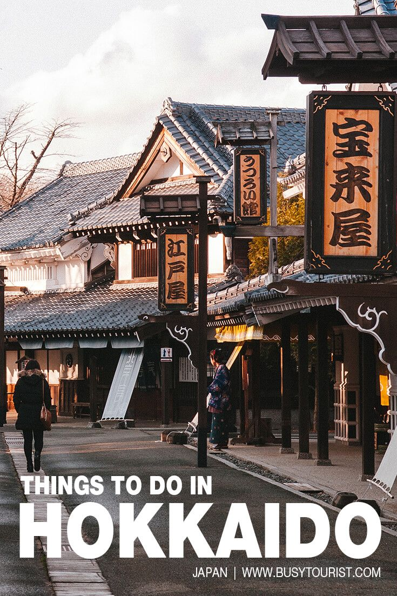
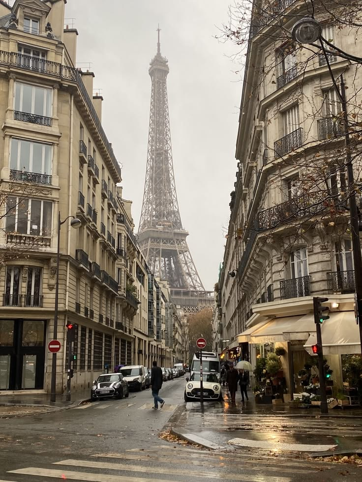
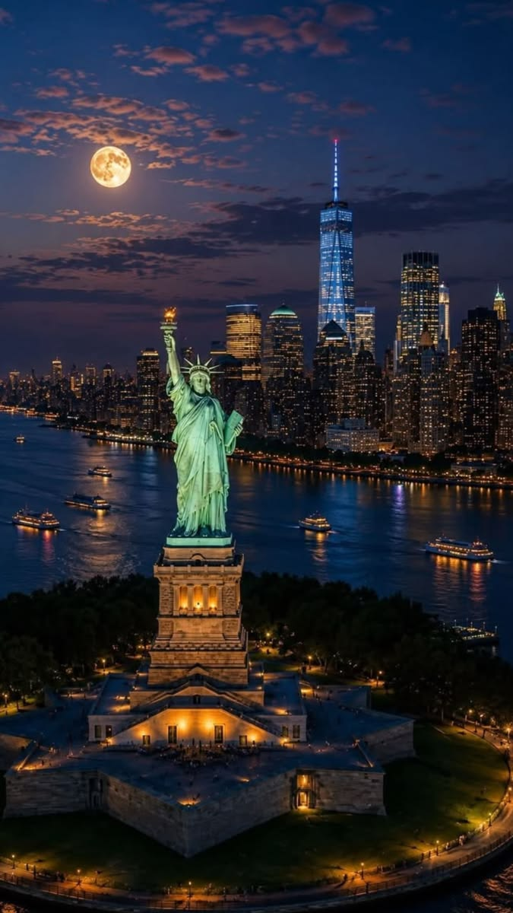
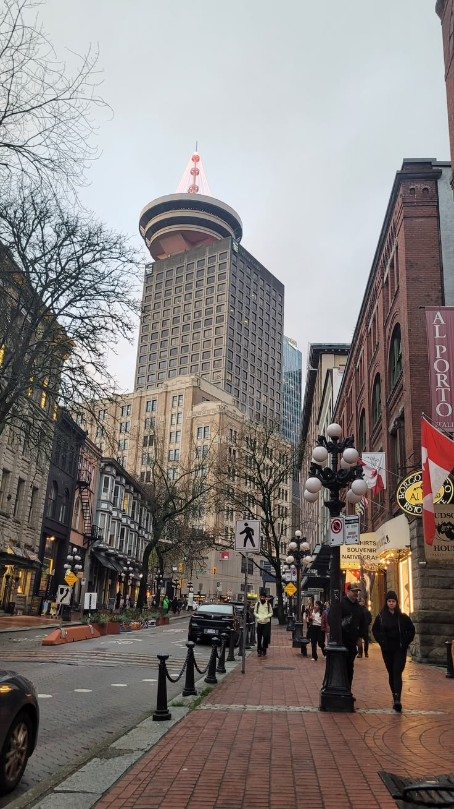
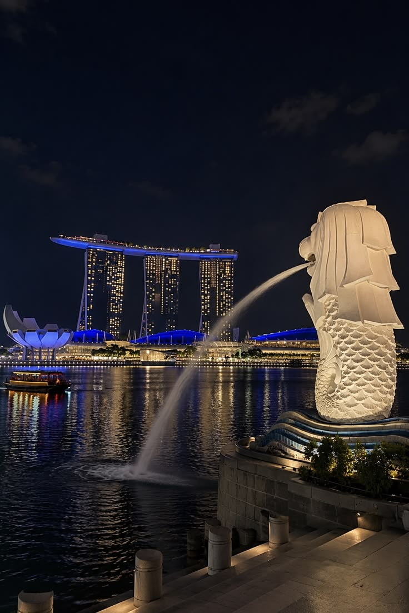

Hokkaido,Jepang

Hokkaido, pulau terbesar kedua di Jepang, menawarkan keindahan alam spektakuler yang memikat wisatawan sepanjang tahun. Saat musim dingin, wilayah seperti Niseko menjadi surga ski internasional berkat kualitas salju bubuknya yang sangat halus. Festival Salju Sapporo yang megah turut memeriahkan musim dingin dengan pameran patung es raksasa di pusat kota. Memasuki musim panas, lanskap Furano dan Biei bertransformasi menjadi hamparan ladang bunga lavender warna-warni yang menakjubkan. Selain pesona alamnya, pulau ini merupakan tanah kelahiran suku asli Ainu yang kaya akan tradisi dan kebudayaan unik. Dikelilingi oleh lautan dingin, Hokkaido sangat terkenal sebagai produsen makanan laut segar terbaik di Jepang, seperti kepiting dan ikura. Sektor peternakannya yang maju juga menghasilkan produk olahan susu, keju, serta es krim soft serve yang lezat. Bagi pencinta suasana nostalgia, Kota Otaru menyajikan pemandangan kanal bersejarah yang indah dengan jajaran gudang bata merah. Sementara itu, Taman Nasional Daisetsuzan menawarkan pemandangan pegunungan vulkanik megah serta keasrian hutan alam yang luas. Dengan perpaduan keajaiban alam, kuliner lezat, dan warisan budaya yang kuat, Hokkaido menjadi destinasi wisata impian yang tak terlupakan.
Eiffel Tower,Paris

Paris, ibu kota Prancis yang dijuluki sebagai "Kota Cahaya," tersohor di seluruh dunia karena kekayaan sejarah, seni, dan arsitekturnya yang anggun. Menara Eiffel yang berdiri megah di tepi Sungai Seine menjadi ikon paling terkenal sekaligus simbol romantisisme kota ini. Museum Louvre, tempat bersemayamnya mahakarya lukisan Mona Lisa, menyajikan koleksi benda seni sejarah yang tak ternilai harganya bagi para pencinta budaya. Sepanjang jalan setapak di tepi Sungai Seine menawarkan pemandangan klasik yang indah, lengkap dengan jajaran toko buku kuno dan jembatan bersejarah seperti Pont Neuf. Katedral Notre-Dame yang bergaya Gotik berdiri sebagai saksi bisu perjalanan sejarah panjang dan keagungan arsitektur abad pertengahan di tengah kota. Kota ini juga diakui sebagai pusat mode dunia yang memimpin tren busana global melalui kawasan belanja mewah di sepanjang Avenue des Champs-Élysées. Budaya kafe yang kental menjadi bagian tak terpisahkan dari gaya hidup warga lokal yang gemar menikmati croissant hangat dan kopi di area outdoor. Pada malam hari, gemerlap lampu kota dan pijaran cahaya dari Menara Eiffel menciptakan suasana magis yang memikat hati setiap pengunjung. Bagi para pencinta kuliner, Paris menawarkan pengalaman gastronomi kelas dunia melalui berbagai restoran ber-bintang Michelin hingga toko kue tradisional yang lezat. Dengan perpaduan sempurna antara keindahan visual, sejarah yang mendalam, dan kebudayaan yang hidup, Paris tetap menjadi destinasi impian yang tak pernah kehilangan pesonanya.
New York City,Amerika

Amerika Serikat, sebuah negara maju di benua Amerika, dikenal luas sebagai salah satu pusat kekuatan politik, ekonomi, dan budaya terbesar di dunia. Ibu kotanya, Washington D.C., menjadi pusat pemerintahan federasi, sementara New York City berdiri megah sebagai pusat keuangan global sekaligus kota paling padat penduduk di negara tersebut. Bangsa ini memiliki lanskap alam yang sangat beragam, mulai dari pesisir pantai Pegunungan Rocky yang megah hingga keajaiban geologis Grand Canyon yang fantastis. Sebagai negara multikultural, penduduk Amerika Serikat terdiri dari berbagai etnis dan budaya yang datang dari seluruh penjuru dunia. Dalam industri hiburan, Hollywood memimpin pasar perfilman global dan memengaruhi tren budaya populer di berbagai negara. Sektor teknologi di Silicon Valley juga menjadi motor penggerak inovasi dunia melalui lahirnya raksasa teknologi internasional. Patung Liberty di New York berdiri sebagai simbol kebebasan dan harapan bagi jutaan imigran yang datang untuk mengejar impian mereka. Keanekaragaman kuliner di negara ini sangat kaya, menawarkan sajian khas seperti burger dan hobi memanggang BBQ hingga beragam makanan cepat saji populer. Sistem pendidikan tingginya juga diakui secara global berkat keberadaan universitas ternama dunia yang tergabung dalam Ivy League. Dengan kombinasi pengaruh global, kemajuan teknologi, dan keberagaman masyarakatnya, Amerika Serikat terus menjadi negara yang memikat perhatian dunia.
Ottawa,Canada

Kanada, negara terluas kedua di dunia yang terletak di Benua Amerika Utara, terkenal dengan keindahan alamnya yang megah dan iklim subarktik yang menakjubkan. Ibu kotanya terletak di Ottawa, sementara Toronto berdiri sebagai kota terbesar yang menjadi pusat ekonomi dan kebudayaan negara ini. Kanada diakui secara global sebagai masyarakat multikultural yang sangat ramah serta menjunjung tinggi toleransi dan keberagaman. Lanskap alaminya sangat memukau, membentang dari Pegunungan Rocky yang menjulang tinggi hingga hamparan Air Terjun Niagara yang sangat ikonik. Negara ini juga memiliki jumlah danau terbanyak di dunia, termasuk Danau Superior dan Danau Huron yang menawarkan pemandangan spektakuler. Selain kaya akan pesona alam, Kanada dikenal luas berkat produksi sirup mapel (maple syrup) berkualitas tinggi yang dipanen dari pohon mapel khasnya. Olahraga hoki es sudah menjadi bagian tak terpisahkan dari identitas nasional dan budaya masyarakat setempat. Dengan bahasa Inggris dan Prancis sebagai dua bahasa resminya, Kanada menghadirkan keunikan tradisi bilateral yang kaya, khususnya di wilayah Quebec. Sistem pendidikan dan kualitas hidupnya yang tinggi menjadikan negara ini salah satu tujuan utama bagi imigran serta pelajar dari seluruh penjuru dunia. Perpaduan antara ketenangan alam, kemajuan ekonomi, dan keberagaman sosial menjadikan Kanada salah satu negara paling nyaman dan memikat di dunia.
City in a Garden,Singapura

Singapura, sebuah negara pulau yang terletak di ujung selatan Semenanjung Malaya, dikenal sebagai salah satu pusat keuangan dan perdagangan global paling maju di dunia. Meskipun memiliki wilayah yang tergolong kecil, negara kota ini berhasil menyulap diri menjadi metropolitan modern yang sangat bersih, aman, dan teratur. Marina Bay Sands dengan arsitekturnya yang ikonik serta taman futuristik Gardens by the Bay menjadi simbol kemewahan dan inovasi arsitektur negara ini. Sebagai masyarakat multietnis, Singapura dihuni oleh warga keturunan Tionghoa, Melayu, India, dan berbagai suku bangsa lain yang hidup rukun berdampingan. Keberagaman budaya tersebut melahirkan kekayaan kuliner khas yang tersaji di berbagai hawker center, mulai dari chicken rice hingga chilli crab. Bandara Changi yang berulang kali dinobatkan sebagai bandara terbaik di dunia menjadi gerbang utama penyambung konektivitas internasionalnya. Komitmen pemerintah terhadap kelestarian lingkungan tercermin dari julukannya sebagai "Kota dalam Taman" (City in a Garden) berkat banyaknya ruang hijau di tengah gedung pencakar langit. Sistem transportasi publik seperti MRT yang sangat efisien memudahkan mobilitas warga serta wisatawan untuk menjelajahi seluruh sudut kota. Singapura juga diakui memiliki sistem pendidikan dan layanan kesehatan berkualitas tinggi yang menjadi tolok ukur di kawasan Asia. Dengan kombinasi stabilitas ekonomi, kemajuan teknologi, dan keharmonisan budaya, Singapura terus berdiri kokoh sebagai salah satu destinasi paling memikat di dunia.